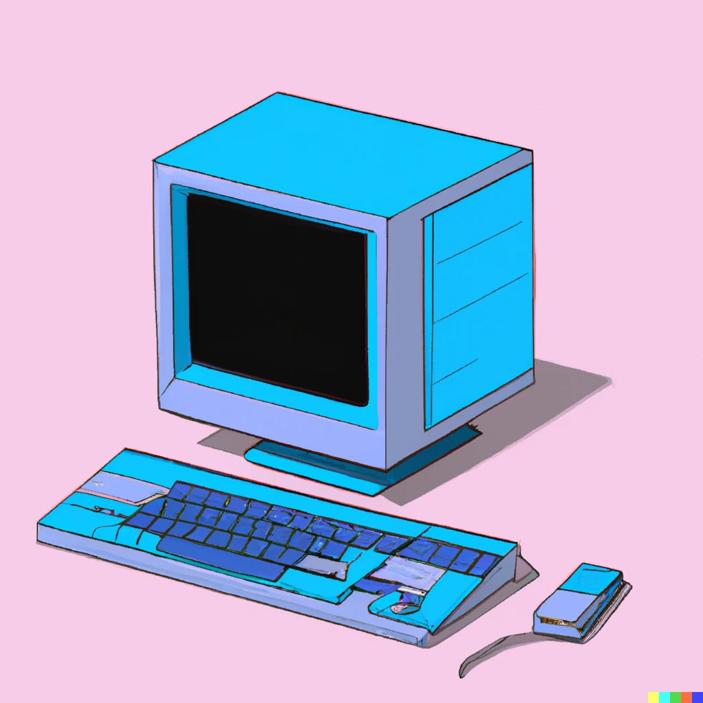
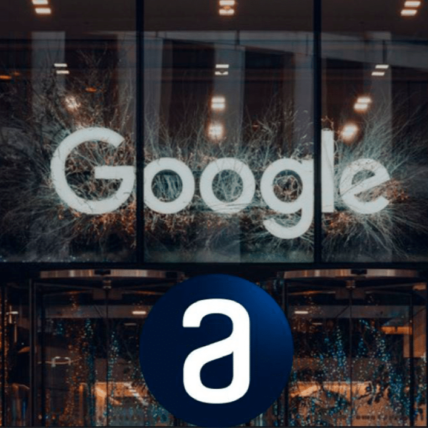
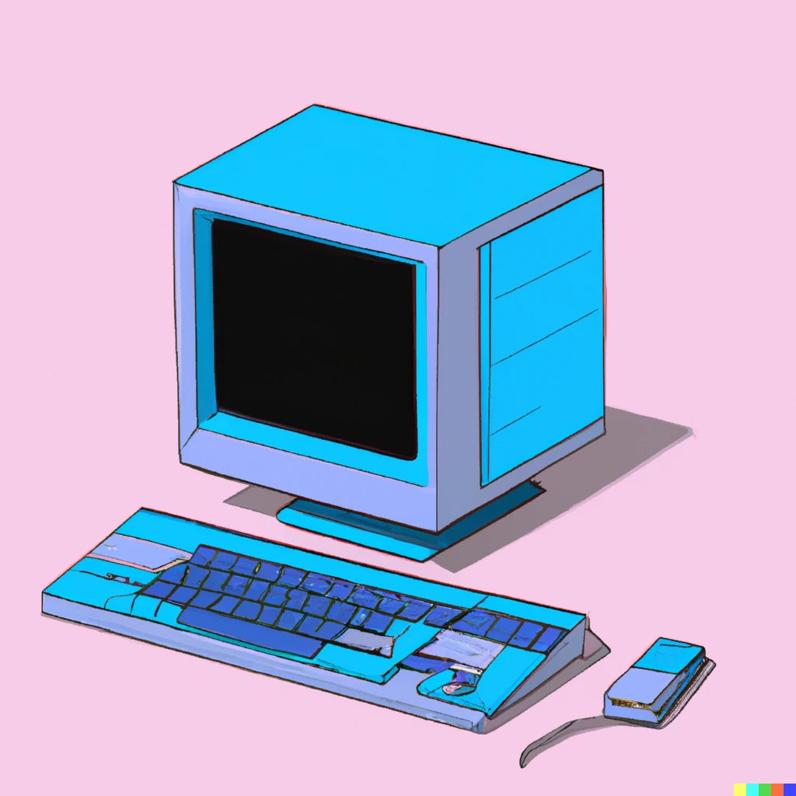
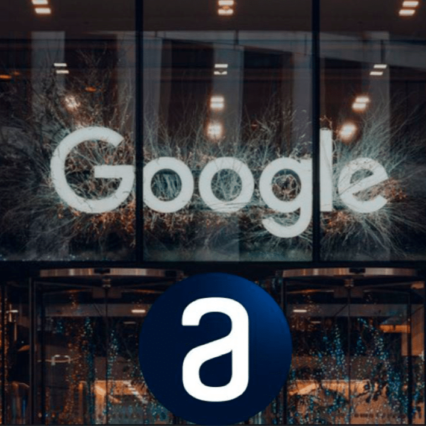

Uma Jornada de Sucesso
"Marcos Bessa, estudante de odontologia da UFPA, ultrapassou limites na graduação. Em 2022, ele ingressou na faculdade com o sonho de ser dentista. Mas foi em 2024 que sua história tomou um novo rumo. Impulsionado pela curiosidade por tecnologia e Inteligência Artificial, Marcos desenvolveu um site de pesquisa voltado para alunos de graduação. Nele é possível pesquisar e ter as características anatômicas de todos os dentes de forma mais clara e interativa.
-
Agosto de 2022
No dia da Cerimônia do Jaleco eu me senti como um Astronáuta: Dando o primeiro passo em uma tragetória cheia de sonhos.
-
Maio de 2024
Primeiras ideias e estudos sobre proramação.
-
Setembro de 2024
Criação do Primeiro Projeto de programação com apoio das plataformas Alura e Google Gemini.
 



"Programar é como aprender uma nova língua. No começo, pode parecer complicado, mas com prática e dedicação, você dominará essa habilidade. Continue perseverando, cada linha de código te leva mais perto do seu objetivo!".